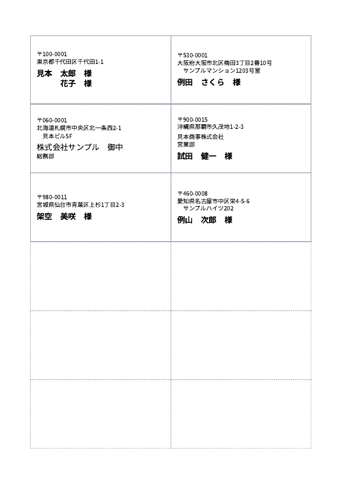

宛名ラベルの面付け印刷
Excel や CSV の住所録から、A4 のラベル用紙に宛名を並べて印刷するツールです。封筒・小包・DM・会報の発送に。ソフトのインストールは不要で、Mac でも Windows でも、いつものブラウザで動きます。
500円（税込・買い切り）
お試し版はすべての機能を使えて、宛名の印刷は先頭3件まで（用紙の位置合わせの試し刷りは何度でもできます）。決済が終わると、そのまま製品版の画面に移動します。ブックマークしておけば何度でも使えます。

12面の用紙に印刷した例（試し刷りの枠つき）。住所・氏名は架空のものです。
こんなときに
- 封筒に貼る宛名ラベルを作りたいが、Word の差し込み印刷は設定が多くて毎回つまずく
- ラベル用紙の付属ソフトが、Mac や今のパソコンでは使えない
- 前回の残りのラベル用紙（途中まで使ったもの）を無駄にしたくない
- 住所録は Excel で管理していて、それをそのまま使いたい
できること
- 住所録の読み込み：Excel（.xlsx）・CSV（UTF-8／Shift_JIS を自動判定）・表の貼り付け。「氏名」「郵便番号」「住所」などの見出しから列を自動で選びます（選び直し可）
- 用紙：A4 の 10面・12面・18面・21面・24面・44面の寸法の例から選べます。ラベルの大きさ・上と左の余白・すき間を mm で直せるので、お手元の用紙の寸法に合わせられます（設定はブラウザに保存）
- 使いかけの用紙：1枚目の何面目から貼るかを、面の図を押して選べます
- 宛名の体裁：〒郵便番号、住所、建物名、会社名・部署、氏名＋敬称（氏名は大きめ）。会社名だけの宛名は「御中」。連名は名の位置をそろえて並べます
- 文字の大きさの自動調整：長い住所や会社名は、その行だけ小さくしてラベルからはみ出さないようにします。小さくなりすぎる行は一覧で知らせます
- 位置合わせ：普通紙に枠つきで試し刷りし、ずれは 0.5mm 単位で補正できます。並べる順（横へ／縦へ）、書体、数字の全角・半角も選べます
- 出さない人を外す：一覧でチェックを外すか、住所録の「印刷」列に「×」「0」などがあれば外します
できないこと（購入前にご確認ください）
- A4 のラベル用紙だけです。ロール状のラベル（ラベルプリンター用）、はがき、封筒への直接印刷には対応していません（はがきは はがきの宛名印刷（縦書き））
- 横書きのみです。縦書きの宛名ラベルには対応していません
- 用紙の寸法の例は一般的な値です。特定のメーカーの品番の寸法を保証するものではありません。お手元の用紙の箱に書かれた寸法をご確認ください
- 人名の外字（パソコンにない字）は印刷できません。住所の正しさ（郵便番号と住所が合っているか）は調べません
- 印刷の仕上がりは、プリンターと用紙の設定によって変わります。お試し版での試し刷りをおすすめします
- スマートフォンでは操作しにくいため、パソコンでお使いください
よくある質問
| 住所録はどこかに送られますか？ | 送られません。読み込み・配置・印刷は、すべてお使いのブラウザの中で行います。 |
|---|---|
| 下の段ほどずれていきます | ラベルの高さか縦のすき間の数字が、用紙と少し違っています。箱の寸法を確かめて直してください。全体が同じだけずれるときは「ずれの補正」で直します。 |
| 印刷すると少し小さくなります | 印刷画面で倍率を「100%（実際のサイズ）」にし、「用紙に合わせる」を外してください。 |
| 何件まで印刷できますか？ | 製品版は件数の制限はありません。次回以降も同じ画面で使えます。 |
| 連絡先アプリの住所録を使いたい | 連絡先ファイル（.vcf）は、連絡先ファイル（.vcf）⇔ CSV 変換 で CSV にしてから読み込めます。 |
安心してお使いいただくために
- 住所録はお使いのブラウザの中だけで処理し、サーバーには送信しません
- 動作環境：最新版の Chrome・Safari・Edge・Firefox（パソコン）
- 説明どおりに動かない場合は、ご購入から7日以内にご連絡いただければ返金します